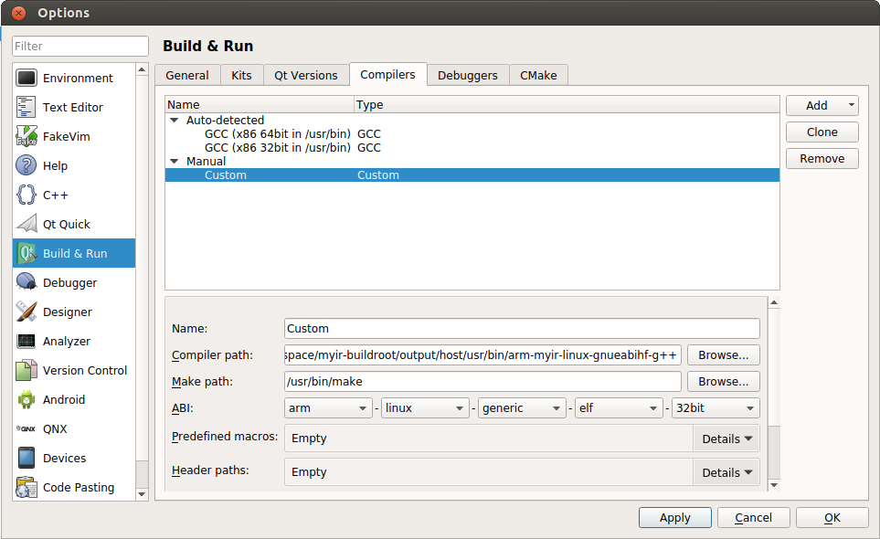
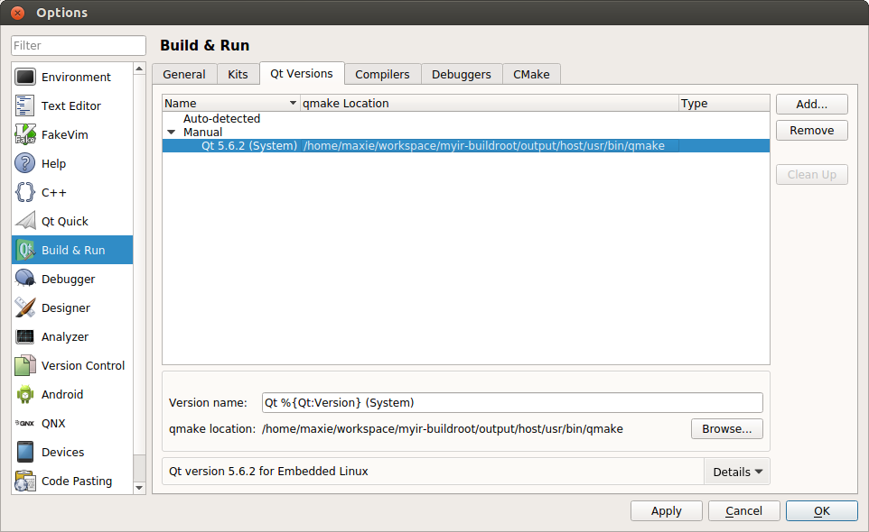
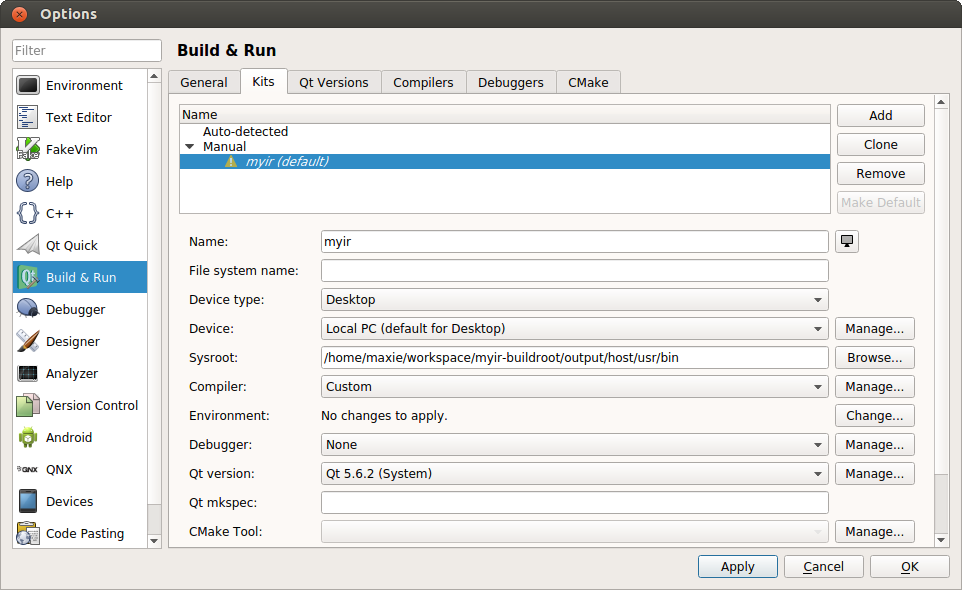
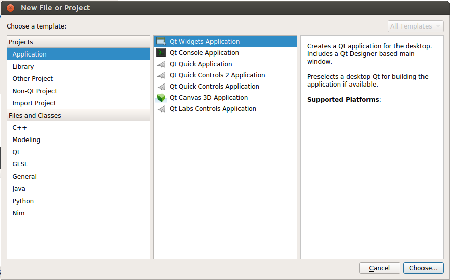
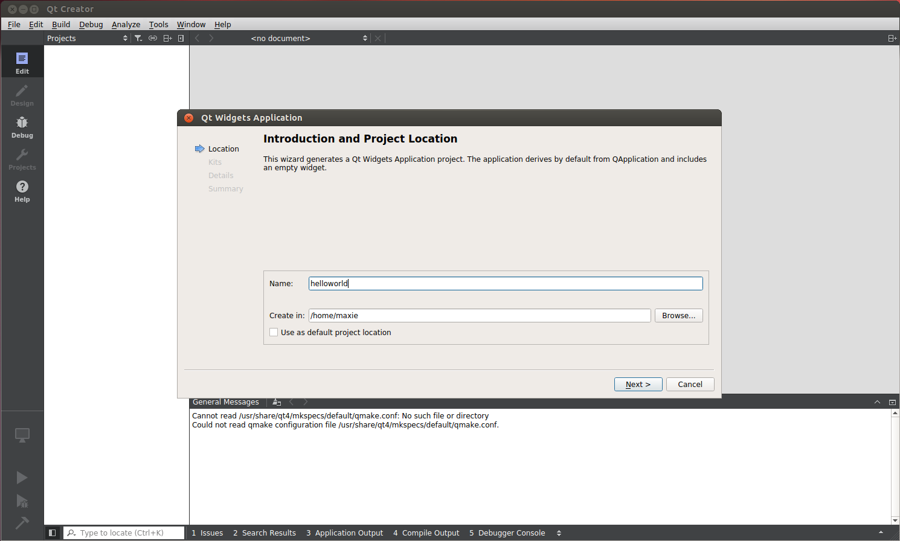
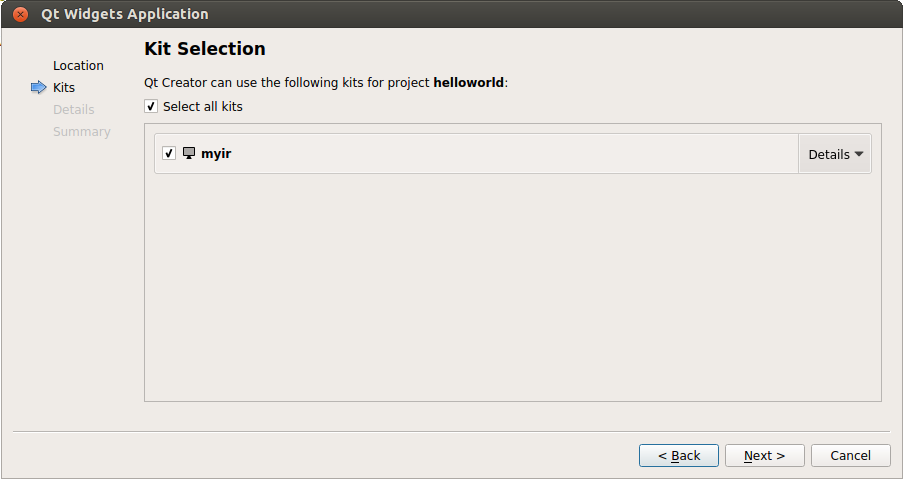
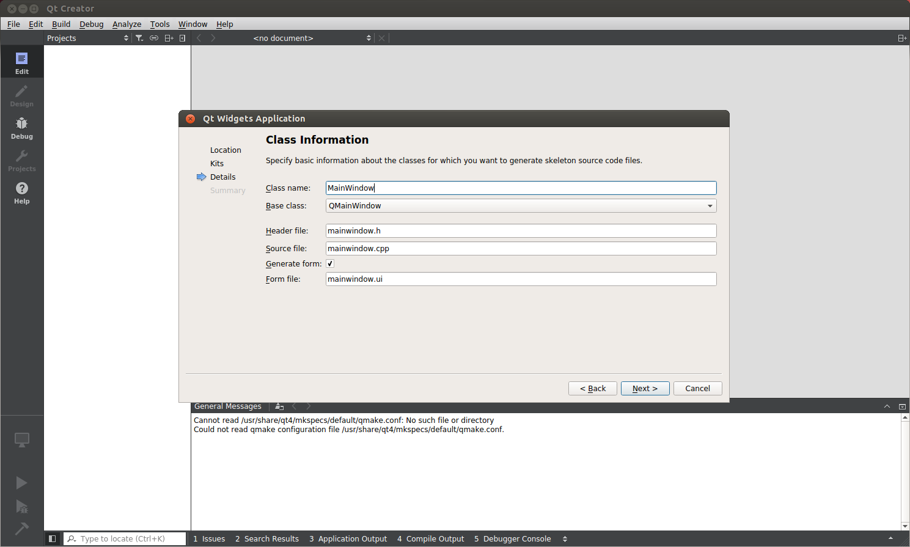

5.2 配置QtCreator
- 配置 QtCreator 开发环境:
运行 QtCreator 后,依次点击Tools->Options,出现选项对话框,在左边点击Build & Run,右边选择Compilers标签。

图5-2-1 编译器选择
点击右侧Add,弹出下拉列表后,选择Custom,在下侧填写以下内容: Name, Compiler path, Make path 和 ABI。填写完成后,点击Apply,进行保存。

图5-2-2 添加编译器
在同一窗口下,选择Qt Version标签,在右侧点击Add...,会弹出对话框,切换目录到Chapter3.4中编译QT得到的SDK目录,选择qmake文件后,点击Open按钮,设置完成之后，点击Apply按钮保存。

图5-2-3 选择qmake构建工具
在Build&Run窗口，继续选择上边的Kits标签,点击右侧Add,填写相应内容。其中Sysroot选择编译工具链的目录,Compiler选择之前填写的名称,Debugger选择None,Qt version选择之前添加时的名称,CMake Tool设置为默认。

图5-2-4 添加Kits
- 创建 Helloworld 项目:
在菜单栏选择File->New File or Project,在打开的对话框中,依次选择Application->Qt Widgets Application,点击Choose..., 如下图所示:

图5-2-5 创建新工程
在弹出的Qt Widgets Application对话框中,设置项目名称为helloworld,Create in一栏填写项目的存储路径, 如下：

图5-2-6 设置新工程名称和路径
点击Next后,选择之前添加好的Kits,继续点击Next, 如下:

图5-2-7 设置新工程Kits
选择当前的的应用继承自哪种Widget,默认选择QMainWindow,然后点击Next进入下一步。

图5-2-8 选择应用程序的类型
以上信息填写完后,点击Finish, 完成QtCreator工程的创建。

图5-2-9 完成工程创建